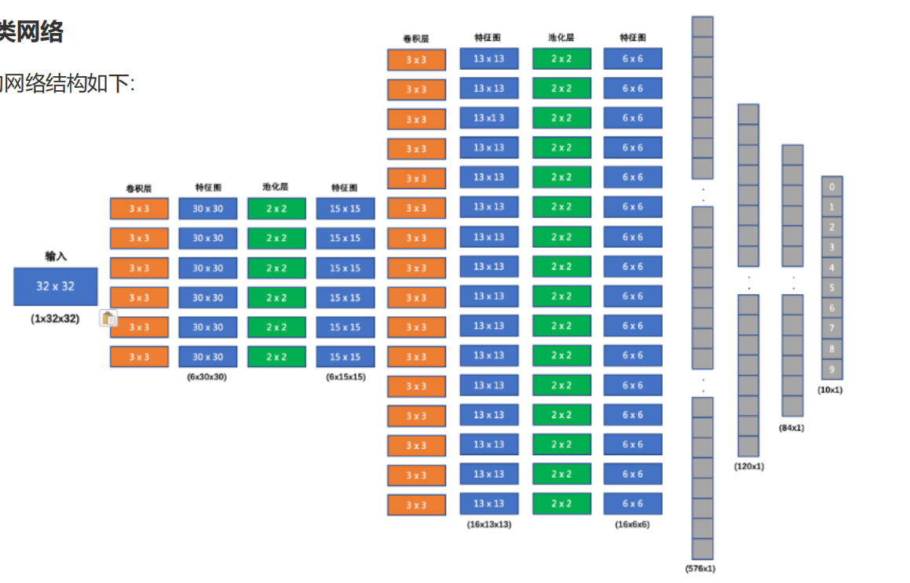

注：此处用占位图示意，请对照你手中的原图来看下面的推导。
import time
from torchvision.datasets import CIFAR10
from torchvision.transforms import ToTensor # 你需要额外安装. pip install torchvision -i https://mirrors.aliyun.com/pypi/simple/
import torch
import torch.nn as nn
import torch.optim as optim
from torch.utils.data import DataLoader
from torchsummary import summary
### 1. 准备数据
def create_dataset():
print('===========================构建张量数据集===========================')
# 1. 加载训练集
# 参1：数据存放路径；参2：是否为训练集；参3：数据转换；参4：是否允许下载数据（如果数据不存在）
tran_dataset = CIFAR10(root='./data', train=True, transform=ToTensor(), download=True)
# 2. 加载测试集
test_dataset = CIFAR10(root='./data', train=False, transform=ToTensor(), download=True)
# 3. 返回数据集
return tran_dataset, test_dataset前面的一大串 import 是在借用大佬们写好的工具包（PyTorch）。重点看 create_dataset() 函数，这就像是你在教小宝宝认识动物（CIFAR10 包含猫狗鸟等10种分类）。
CIFARModel 完整拿出来。
### 2. 搭建模型
class CIFARModel(nn.Module):
print('===========================搭建神经网络模型===========================')
# 1. 创建各层网络
def __init__(self):
super().__init__()
# 1.1 第一个卷积层：输入 3个 Channels, 输出 6个 Channels, 卷积核大小 3x3, 步长 1, 填充 0
# 输入：3x32x32
self.conv1 = nn.Conv2d(in_channels=3, out_channels=6, kernel_size=3, stride=1, padding=0)
# 第一个池化层：输入 30x30, 输出 15x15, 卷积核大小 2x2, 步长 2, 填充 0
self.pool1 = nn.MaxPool2d(kernel_size=2, stride=2, padding=0)
# 1.2 第二个卷积层：输入 6个 Channels, 输出 16个 Channels, 卷积核大小 3x3, 步长 1, 填充 0
self.conv2 = nn.Conv2d(in_channels=6, out_channels=16, kernel_size=3, stride=1, padding=0)
# 第二个池化层：输入 13x13, 输出 6x6, 卷积核大小 2x2, 步长 2, 填充 0
self.pool2 = nn.MaxPool2d(kernel_size=2, stride=2, padding=0)
# 1.3 第一个全连接层：输入 576 (= 16 * 6 * 6) 维, 输出 120 维
self.linear1 = nn.Linear(576, 120)
# 1.4 第二个全连接层：输入 120 维, 输出 84 维
self.linear2 = nn.Linear(120, 84)
# 1.5 最后的输出层：输入 84 维, 输出 10 维
self.out = nn.Linear(84, 10)
# 2. 定义前向传播
def forward(self, x):
# 第1层: 卷积层 -> 激活层 -> 池化层
# 池化 激活 卷积
x = self.pool1(torch.relu(self.conv1(x)))
# 第2层: 卷积层 -> 激活层 -> 池化层
x = self.pool2(torch.relu(self.conv2(x)))
# 扁平化: 将 16x6x6 的特征图, 拉直成为长度 576 的一维向量
# shape: [batch_size, 16, 6, 6] -> [batch_size, 576]
x = x.reshape(x.shape[0], -1)
# 第3层: 第1个全连接层 + 激活函数
x = torch.relu(self.linear1(x))
# 第4层: 第2个全连接层 + 激活函数
x = torch.relu(self.linear2(x))
# 第5层: 输出层
# x = self.out(x)
return self.out(x) # 后续传入 CrossEntropyLoss = Softmax计算 + 损失函数计算假设图片是一张大披萨，卷积核（Kernel）就像是一个小巧的“模具”。我们拿着模具在披萨上滑动，提取出特征（比如边缘、颜色）。
结合代码 self.conv1 和你的图纸：
输入图片是 $32 \times 32$（$I = 32$）。代码中 kernel_size=3 ($K=3$), padding=0 ($P=0$), stride=1 ($S=1$)。
代入公式计算：
$$ O = \frac{32 - 3 + 2 \times 0}{1} + 1 = 30 $$
🎉 结论： 图片从 $32 \times 32$ 变成了图纸上的 $30 \times 30$！
接下来是池化 self.pool1：
池化就是“浓缩”。模具变成了 $2 \times 2$ ($K=2$)，步长为 $2$ ($S=2$)。代入公式：
$$ O = \frac{30 - 2 + 0}{2} + 1 = 15 $$
🎉 结论： 图片被浓缩一半，变成了图纸上的 $15 \times 15$！
左边是图像矩阵，中间是卷积核。重叠部分对应位置相乘再相加，填入右边特征图中。
你看 forward 函数里面有一句 x = x.reshape(x.shape[0], -1)。经过两轮卷积池化，原本的图片变成了 16 个 $6 \times 6$ 的小方块。
我们把它们拉直排成一排，长度就是 $16 \times 6 \times 6 = 576$。这就是图纸最右边长条的 (576x1)。
最后通过 linear1, linear2, out 这几个“全连接层”（就像算命先生层层打分），把 576 个特征浓缩成 120 个，再浓缩成 84 个，最后得出 10个分数。分数最高的那一项，就是AI猜测的动物类别！
### 3. 训练模型
def train(tran_dataset):
print('===========================模型训练===========================')
# 使用 GPU
device = torch.device('cuda' if torch.cuda.is_available() else 'cpu')
# 1. 创建训练数据加载器
data_loader = DataLoader(tran_dataset, batch_size=BATCH_SIZE, shuffle=True)
# 2. 创建模型
model = CIFARModel()
model = model.to(device)
# 3. 创建损失函数
criterion = nn.CrossEntropyLoss()
# 4. 创建优化器
optimizer = optim.Adam(model.parameters(), lr=LR)
# 5. 训练模型
epochs = 10
for epoch in range(epochs):
# 记录总损失
total_loss = 0.0
# 记录正确预测数量
total_correct = 0
# 记录开始时间
start = time.time()
# 分批次训练
for x, y in data_loader:
x = x.to(device)
y = y.to(device)
# 5.1 模型预测
y_pred = model(x)
# 5.2 计算损失（累计总损失）
loss = criterion(y_pred, y)
total_loss += loss.item() * len(x)
# 5.3 计算梯度
# 梯度清零
optimizer.zero_grad()
loss.backward()
# 5.4 更新权重
optimizer.step()
# 5.5 累计正确预测总数
total_correct += (torch.argmax(y_pred, dim=-1) == y).sum()
# 计算时间、平均损失、准确率
dur = time.time() - start
mean_loss = total_loss / len(tran_dataset)
accuracy = total_correct / len(tran_dataset)
# 打印结果
print(f"epoch: {epoch+1}, mean_loss: {mean_loss:.3f}, acc: {accuracy: .3f}, time: {dur:.3f} s")
# 6. 保存模型
torch.save(model.state_dict(), '.cifar_model.pth')这一大段循环，就是AI做题、对答案、自我纠正的过程。
BATCH_SIZE）来学。CIFARModel 的各个参数旋钮。下一次预测就会更准一点。epochs=10）后，把学聪明的脑子存下来（torch.save）。# 4. 模型评估
def evaluate(test_dataset):
print('===========================模型评估===========================')
# 使用 GPU
device = torch.device('cuda' if torch.cuda.is_available() else 'cpu')
# 1. 创建预测数据加载器
data_loader = DataLoader(test_dataset, batch_size=BATCH_SIZE*2, shuffle=False)
# 2. 创建模型
model = CIFARModel()
# 3. 加载模型权重
model.load_state_dict(torch.load('.cifar_model.pth'))
# 4. 切换到模型评估模式
model.eval()
model = model.to(device)
# 5. 模型预测
# 记录正确预测数量
start = time.time()
total_correct = 0
for x, y in data_loader:
x = x.to(device)
y = y.to(device)
# 5.1 模型预测
y_pred = model(x) # 加权求和结果
y_pred = torch.argmax(y_pred, dim=-1) # 分类结果
# 5.2 获取预测正确的样本个数.
total_correct += (y_pred == y).sum()
dur = time.time() - start
# 5. 打印结果
print(f'accuracy: {total_correct / len(test_dataset):.3f}, time: {dur:.3f} s')把刚才存下来的“聪明脑子”读进来（load_state_dict），并且告诉它 model.eval()（考试模式，不准看答案偷改参数了！）。
让它在 10000 张没见过的测试集（期末卷子）上做预测，最后统计答对的题数（total_correct），除以总题数，算出最终的准确率 Accuracy。
if __name__ == '__main__':
# 设置超参数
BATCH_SIZE = 32
LR = 0.001
# 1. 准备数据
tran_dataset, test_dataset = create_dataset()
# 检查数据
print(f'训练集数量: {tran_dataset.data.shape}')
print(f'测试集数量: {test_dataset.data.shape}')
print(f'分类类别： {tran_dataset.classes}')
print(f'分类类别索引: {tran_dataset.class_to_idx}')
# 显示图像
# i = 10000
# plt.imshow(tran_dataset.data[i])
# plt.title(tran_dataset.classes[tran_dataset.targets[i]])
# plt.show()
# 2. 搭建模型
model = CIFARModel()
# 查看模型参数
summary(model, input_size=(3, 32, 32), device='cpu')
# 168 = (3*3*3 + 1) * 6
# 880 = (3*3*6 + 1) * 16
# 69240 = (16*6*6 + 1) * 120
# 10164 = (120 + 1) * 84
# 850 = (84 + 1) * 10
# 3. 测试 模型训练函数.
train(tran_dataset)
# 4. 测试 模型评估函数.
evaluate(test_dataset)这是程序的总指挥部。在这里设置了 BATCH_SIZE（每次看多少张图）和 LR（学习率，代表AI学习时调整参数的步伐大小）。
同时，在注释里你解答了参数量是怎么算出来的，例如：第一层参数 168 = (3*3*3 + 1) * 6。
计算公式：参数量 = (卷积核宽 $\times$ 卷积核高 $\times$ 输入通道数 + 1个偏置值) $\times$ 输出通道数。完全正确！